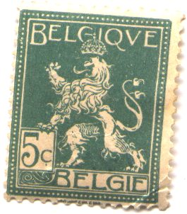
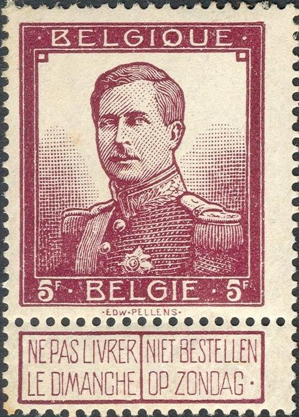
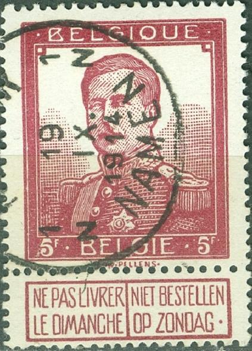
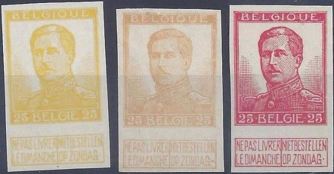

{kind=link}

Return To Catalogue - Belgium 1849-1865, King Leopold - Belgium 1866-1869 Lions - Belgium 1869-1892 - Belgium 1914-15 Red Cross issues - Belgium 1915 onwards
Currency: 100 Centimes = 1 Franc
Note: on my website many of the
pictures can not be seen! They are of course present in the
catalogue;
contact me if you want to purchase it.
Gereral remarks about stamps with tab; when the tab is no longer attached to the stamp, the stamp is less valuable.
For stamps of Belgium from 1893 to 1911 click here.
1 c orange (number) 2 c brown (lion) 5 c green (lion)
Value of the stamps |
|||
vc = very common c = common * = not so common ** = uncommon |
*** = very uncommon R = rare RR = very rare RRR = extremely rare |
||
| Value | Unused | Used | Remarks |
| 1 c | vc | vc | |
| 2 c | vc | vc | |
| 5 c | vc | vc | |

(Reduced size)
10 c red 20 c olive 25 c blue 35 c brown 40 c green 50 c grey 1 F orange 2 F violet 5 F brown (larger size)
Two types: two buttons left (and smaller head) and one button
right (and bigger head). Also there are two tiny squares in the
upper top left and right in the first type.
For the specialist: two types exist of these stamps. In type I there are two buttons on the uniform of the king, all stamps except the 25 c were issued in type I. In type II there is only one button on the uniform and the head of the king is larger, the values 10 c, 20 c, 25 c and 40 c were issued in type II. The values 10 c, 20 c and 25 c of type II exist in a subtype without the name of the engraver "EDW PELLENS".
Value of the stamps |
|||
vc = very common c = common * = not so common ** = uncommon |
*** = very uncommon R = rare RR = very rare RRR = extremely rare |
||
| Value | Unused | Used | Remarks |
| 10 c | * | c | two buttons |
| 10 c | vc | vc | one button |
| 20 c | ** | * | two buttons |
| 20 c | * | * | one button |
| 25 c | c | c | |
| 35 c | * | * | |
| 40 c | *** | *** | two buttons |
| 40 c | * | * | one button |
| 50 c | * | * | |
| 1 F | ** | * | |
| 2 F | *** | *** | |
| 5 F | *** | *** | |
 
On the left, presumably genuine stamp. On the right: Deceptive
forgery. Note that the "S" of "PELLENS" is
larger, the background on the right is less gradually shaded, the
second line on the 'epaulette' on the left (from our point of
view) is not correct (all lines should be parallel in the genuine
stamp).
I've seen deceptive forgeries of the 5 F with cancel "SCHAERBEEK 19-20 6 V 1913", "St HUBERT 7-8 26 XII 13" (see image below) or "NAMUR 19 IX. 1914 NAMEN 1N 1N" (see image above).They also exist with a railway cancel "GENT-DAMPOORT -2 IX 1914 GAND - PORTE D'ANVERS".


Forgery with forged "St HUBERT 7-8 26 XII 13" cancel
and another forgery with forged "GENT-DAMPOORT -2 IX 1914
GAND - PORTE D'ANVERS".
Imperforate forgery.
Usually, the forged cancels on these forgeries are quite neat,
but not always.
If I'm well informed the lower values have also been forged (30 c and 1 F). These types with two buttons were forged, they are quite dangerous.
I've seen many 25 c imperforate 'proofs' in many colors (the one button type). I presume these are either illegal reprints or forgeries.

Imperforate proofs of the 25 c value from my own collection in
fancy colors.
Sheet with imperforate stamps, with or without inscription
"ESSAIS 1912". In the center a stamp of the 1915 design
(no value). These sheets exist in different colors. The quality
of these sheets is rather bad for essays and I have seen a lot of
them, I wonder if these 'essays' were not created for stamp
collectors....
For Belgium 1914-15 Red Cross issues or Belgium 1915 onwards, click here.
{kind=link}
{kind=link}
{kind=link}